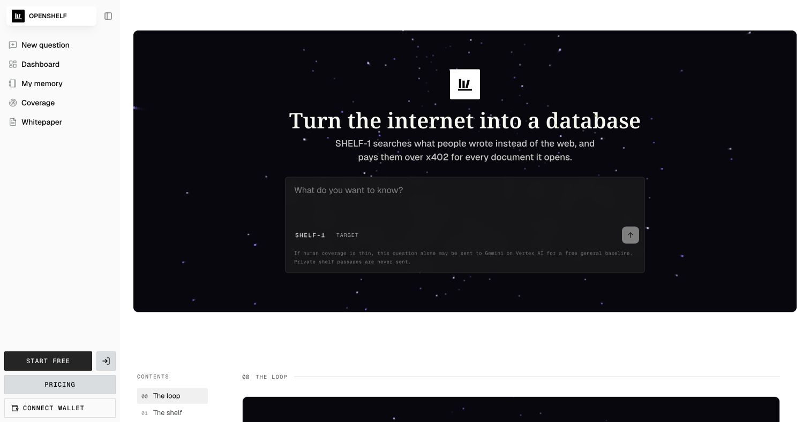
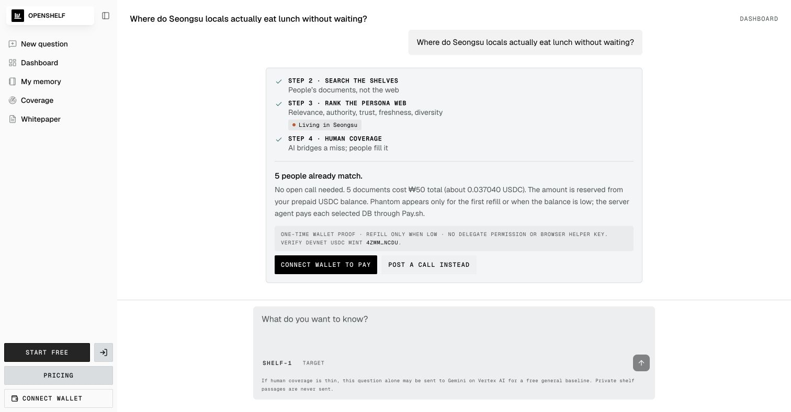
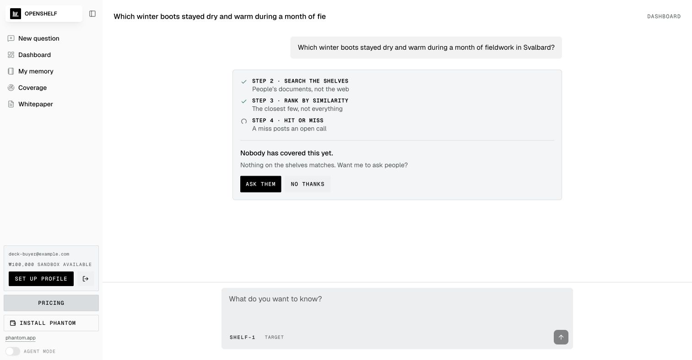
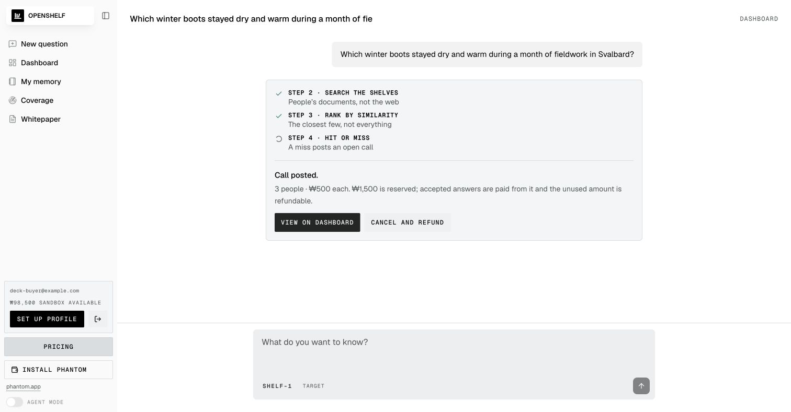
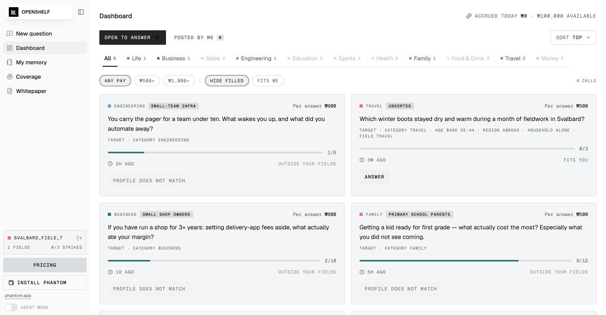
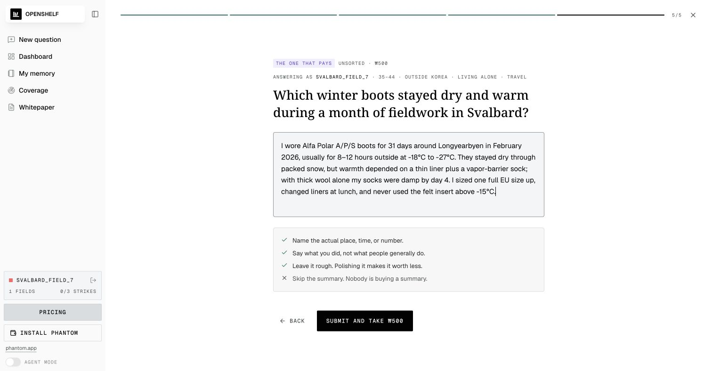
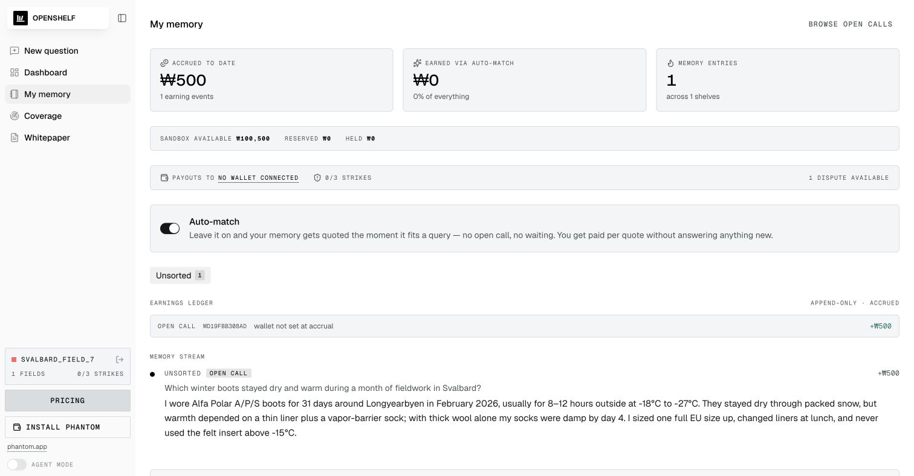
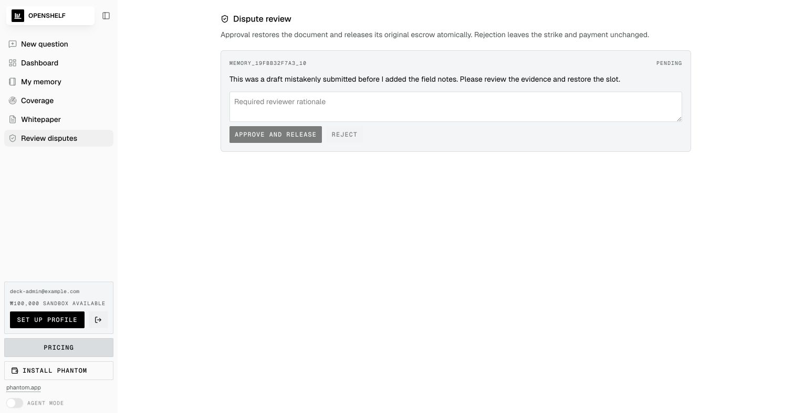

웹과 범용 AI는 일반론에 강하다
지역·직무·가구·시점이 맞는 firsthand evidence는 찾기 어렵고 출처의 삶을 검증하기 어렵다.
질문자는 필요한 firsthand evidence를 사고, 기여자는 자신의 경험을 반복 수익이 나는 데이터베이스로 만든다.
조직과 개인이 원하는 것은 평균적 정보가 아니라 “그 상황을 실제로 살아본 사람의 구체적 판단”이다.
사람의 경험은 가치가 있지만,
검색·검증·지급·재사용할 수 있는 형태가 아니다.
지역·직무·가구·시점이 맞는 firsthand evidence는 찾기 어렵고 출처의 삶을 검증하기 어렵다.
모집·스크리닝·보상·정리 비용이 반복되고, 한 번 모은 답변이 다음 질문의 자산이 되지 못한다.
한 번 답하고 끝나며, 이후 같은 경험이 재사용돼도 원저자에게 수익과 통제가 돌아가지 않는다.
기관·기업·개인의 질문은 다르지만, 필요한 사람을 찾고 정확한 경험에만 비용을 지불한다는 요구는 같다.
지자체·공공기관·대학·연구소·비영리 조직의 정책, 현장조사, 시민경험 담당자
필요: 공개 통계가 놓치는 현장 맥락과 다양한 생활 집단의 구체적 증언
전략·리서치·제품·CX·마케팅·HR 팀, 지역·산업별 시장을 이해해야 하는 운영 조직
필요: 빠른 탐색, 타깃 경험자 접근, 사용한 evidence만 과금되는 조사 방식
창업가·연구자·크리에이터·구매자와, 직업·지역·돌봄·소비 경험을 가진 기여자
필요: 긴 꼬리 질문에 대한 실제 답과, 자신의 경험에 대한 지속적 소유·수익
별도의 대형 패널 프로젝트보다 작게 시작한다. 답이 있으면 즉시 사고, 없으면 같은 화면에서 새 조사를 만든다.
정책·지역 서비스 설계 전, 특정 생활집단의 실제 불편을 확인
상황 밴드로 검색하고 부족한 집단에 표적 오픈콜 게시
익명·출처 연결된 현장 evidence와 지급·동의 감사 기록
제품·상권·채용·고객경험 의사결정 전에 빠른 질적 근거 필요
기존 human DB를 먼저 열고, gap만 소수 인터뷰로 보충
질문별 비용이 보이는 인용 가능한 경험 묶음과 재검색 자산
웹에 없는 지역·직업·생활 선택을 자연어로 질문
웹 UI 또는 Antigravity가 검색·승인·결제를 한 흐름으로 수행
사람의 원문 인용, AI 일반 기준선, 필요한 경우 신규 오픈콜
질문자와 기여자가 따로 노는 서비스가 아니다. 오늘의 답변이 내일의 검색 공급이 된다.
질문과 상황 밴드로 후보를 찾고, 본문을 열기 전에 가격과 적합도를 본다.
관련성·신뢰·신선도·권위·저자 다양성을 함께 계산한다.
선불 잔액에서 총액을 예약하고 성공한 DB 소유자에게 각각 정산한다.
채택된 경험은 Memory에 들어가 다음 검색에서 다시 수익을 만든다.
질문과 연령·지역·가구·분야를 지정하면 Rust가 사람의 문서에서 먼저 답을 찾는다. 검색과 순위 계산은 무료다.

사람을 통째로 공개하지 않고도 데이터베이스를 발견하고 비교할 수 있다. 결제가 확정돼야 정확한 스냅샷 하나가 열린다.
질문별로 필요한 사람과 문서를 찾되, private passage는 서버 밖으로 나오지 않는다.
결제 콜백이 미리 커밋된 가격·소유자·해시·민트·네트워크와 모두 일치해야 본문이 열린다.

화면은 전체 예상 비용을 먼저 보여주고, 서버 에이전트는 선택된 다섯 소유자에게 독립적으로 지급한다.
한 질문을 durable job으로 만들고 문서별 지급을 독립 처리한다. 브라우저가 닫혀도 Cloud Run worker가 이어간다.
소유자·해시·가격·민트·네트워크·만료를 고정한다.
부족하면 refill 402를 내고, 충분하면 job을 funded로 바꾼다.
비추출 GCP KMS 키가 각 MPP challenge를 서명한다.
응답이 유실돼도 ledger에서 복구하고 중복 지급하지 않는다.
영구 실패한 atomic remainder를 prepaid credit으로 되돌린다.
사람 답변이 부족하면 같은 질문을 ‘단가 × 인원’의 오픈콜로 전환한다. 채워지지 않은 슬롯은 환불 가능하다.


AI가 답인 척하지 않고, 지금 부족한 firsthand evidence를 공개한다.
인원·단가·타깃을 확정하고, 수락된 답변마다 deterministic share를 지급한다.
프로필 밴드와 분야가 타깃에 맞아야 예약할 수 있다. 서버는 장소·시간·숫자·행동이 없는 일반론을 거절한다.


분야·연령·지역·가구 밴드는 UI뿐 아니라 Rust가 다시 검증한다.
중복·직접식별자·짧은 일반론을 차단하고, 통과한 원문만 문서가 된다.
채택된 답변은 버전·해시·신뢰도·동의 상태를 가진 human document가 된다. 다음 질문에 인용되면 새 답변 없이 다시 지급된다.

Gemini on Vertex AI는 빈 화면을 막는 무료 일반 기준선이다. 가격·권위·수익은 언제나 사람의 firsthand document에만 붙는다.
구체적인 lived experience · 가격 있음 · Memory 저장 · 검색 권위와 수익 생성
일반적 방향과 판단 기준만 · 무료 · 만료됨 · 재판매·랭킹·인용 수익 없음
AI가 밝힌 firsthand gap을 사람에게 돌려 새 human inventory로 전환
$ agy /ask-people 성수동 점심 경험을 20명에게 물어봐. 총 5 USDC 이내. ✓ free search ✓ exact aggregate quote ✓ approval required ✓ Pay.sh settlement ✓ cited human evidence $ /contribute 내가 답할 수 있는 질문만 보여줘. → reserve · answer · earnings · payout
출시 경로에는 이메일과 비밀번호가 없다. 사용자는 지갑 소유권을 한 번 증명하고, 정확한 Devnet 총액을 확인한 뒤 결제한다.
Cloudflare Pages와 Cloud Run을 서비스 경계로 두고, 운영 원장은 ax-apps-db의 전용 obolus DB에, 롤백 감사는 ax-apps-storage의 전용 prefix에 둔다.

시장 신뢰는 성공 화면이 아니라 실패를 어떻게 기록하고 되돌리는지에서 만들어진다.
query·document·quote에 묶인 ledger가 유실 응답을 복구하고, 동일 가격의 다른 문서로 credential을 재사용하지 못하게 한다.
영구 실패한 문서 몫만 정확히 prepaid credit으로 되돌린다.
2회면 auto-match·지급 보류, 3회면 추가 제출을 정지한다.
관리자 승인 시 문서·슬롯·지급을 한 트랜잭션으로 복원한다.

1 · 검증 완료 지갑 전용 로그인, PostgreSQL 동시성, Pay.sh 결제·장애 복구·credential 경계를 자동화했다.
2 · 운영 연결 Cloud Run 후보를 ax-apps-db의 obolus DB와 ax-apps-storage의 전용 감사 prefix에 연결한다.
3 · 복구 훈련 실제 PostgreSQL restore와 GCS 감사 기록을 사용해 트래픽 차단·대조·재개 절차를 검증한다.
4 · 폐쇄형 파일럿 동의된 기여자 집단에서 time-to-evidence, human coverage, recovery rate를 측정한다.